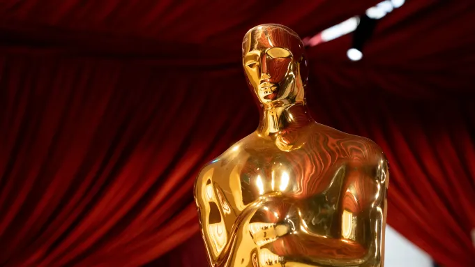

-
Thoughts on the 2025 Best Picture Lineup
by Mitchel Green - March 2, 2025
|
mitchelgreen34@gmail.com

In stepping back from the blog a bit since moving to Chicago, I realized I’ve missed reviewing many of the Best Picture nominees from this year’s Oscars. Rather than writing 10 (well, seven) full reviews for every movie I missed, I’ve written up some blurbs for each of the nominees. Thinking back on this year’s class, I’ve been greatly disappointed by the quality relative to recent years, but I also noticed how many of these were generally popular.
Anora
As a fan of Sean Baker’s last few films (and a big fan of his previous effort “Red Rocket”), I was ecstatic by the universal praise heaped upon “Anora” at Cannes last May. But the very same attribute that made it such a hit, and will likely propel it to a Best Picture win, is what I think makes it a huge step backward for Baker. In “Anora,” Baker is trying to make a crowd pleaser. It’s a fractured fairytale of sorts that goes broad and shallow both in its sense of humor and its characters, though I think its desire not to alienate anyone is why it has become so popular. It’s more exhausting than it is funny, which is painful once it switches into full screwball comedy mode because the film’s loose structure makes it feel neverending. It reaches for some unearned catharsis at the end, which flops because Ani isn’t given much to do but follow the Armenians around town. Madison and Borisov are both nominated as performers, and they are good for what they’re given, but there just isn’t much to work with here.
The Brutalist
“The Brutalist” blew me away when I saw it at CIFF last fall, and it continues to reveal more layers each time I’ve returned to it. Brady Corbet’s epic works as an allegory for the process of getting a film made at all costs and the obscene wealth needed to make a production of this magnitude happen, a blunt condemnation of struggles for power and control and the violence that inevitably comes out of that, a story of assimilation and the American project that promises opportunity so long as you’re willing to be exploited, and a satirical look at someone willing to give away everything to make something that lasts forever only for his intent to be co-opted by forces more powerful than he. That Corbet can maintain this density and sense of grandeur through mostly intimate conversations between just a couple of characters is both a grand achievement and fitting with his idea of brutalism — the melding of the maximalist and the minimalist.
A Complete Unknown
Hope for the best, expect the worst. Much as I love Bob Dylan, I wasn’t exactly looking forward to seeing what I assumed would be an overly conventional biopic of a subject who was anything but conventional. This assumption was more correct than I could have ever anticipated, and yet I found myself mildly enthralled by “A Complete Unknown.” My relationship to Dylan’s music, particularly his early stuff, and my interest in that period in American history are probably the main drivers here as opposed to anything this film is doing, but it’s still more technically proficient than most Hollywood movies seem to be now — what Mangold does with sound, especially in the concert sequences, is genuinely impressive. Add a handful of excellent performances from Chalamet, Norton, and Barbaro (all nominated) and you have a decent time at the movies.
Conclave
It’s funny that “Conclave” has become a bit of a meme online given that the film itself is so averse to its own pulpy unseriousness. Though that unwarranted self-seriousness has led to “Conclave” being a power player this awards season, it also holds it back from being a good movie. Edward Berger’s completely misguided approach isn’t too shocking given his atrocious adaptation of “All Quiet on the Western Front,” turning a mostly quiet, downbeat novel into a pulsing action film, but it is disappointing given the material’s potential. Not to be good — to be clear, this is a dumb B-movie to its core — but to be a fun, and possibly politically radical work of pop art. Unfortunately, neither Berger nor writer Peter Straughan (nor, I assume, original author Robert Harris), are bold enough to skewer the rotten institution that is the Catholic Church.
Dune: Part Two
I’ve already written about “Dune: Part Two” for this blog, and I don’t have a ton to add. The film is good, even impressive at times, and yet I can’t say that I love it. It’s not necessarily this film’s fault either. Not only is it inherently incomplete, acting as the second half of a story rather than a follow-up, but “Part One” doesn’t lay sufficient groundwork for me to care what’s going on in “Part Two.” That’s a shame, the pacing is electric and some of the set pieces are among the best I’ve seen in an action (or action-adjacent) film this decade. I’m just not invested at all.
Emilia Perez
If “Emilia Perez” wins Best Picture, the Academy needs to be dismantled. It is a tasteless, half-assed provocation that isn’t even provocative. It’s just boring. There’s not one redeeming part about the film. Try as some have to claim it as camp, the film is trying too hard to find a balance of camp and respectability to fit into either camp. It exists in a limbo between great and so bad it’s great. In other words, so bad it’s bad. It’s self-conscious filmmaking at its worst. That’s not even touching on its regressive, incurious view of transness, using it only to get a rise out of viewers without ever wanting to explore what it means in the context of the film. Not only the worst nominee of the bunch, but the worst movie of the year and it isn’t close.
I'm Still Here
What does it say that the most effective political statements in this year’s Best Picture nominees are all period pieces? Are our major artists today unequipped to grapple with our modern day politics? Is it easier to filter what’s going on today through the lens of the past? Have our current problems always been problems, ensuring that the period pieces will sadly remain relevant long after the time of their subjects? At any rate, Walter Salles’s “I’m Still Here” is a heartbreaking look at the forced disappearance of Rubens Paiva in the 1970s by the Brazilian dictatorship. What makes it great isn’t its portrayal of the actions of the Brazilian government, but rather the family drama at its core. It’s joyful opening act is such a beautiful and unfortunate contrast to the back half when Paiva’s wife Eunice, one of the best performances of the year by Fernanda Torres, must both reckon with the fact that her husband has likely been murdered and pick up the pieces to hold her family together. Horrific actions of previous decades have ripple effects that resonate in our current era. We see this in the film’s brilliant ending in which Eunice, despite having suffered with Alzheimer’s for a decade, recognizes her husband's photo in a documentary about the forced disappearances. Just because a new government comes in and “fixes” the wrongs doesn’t mean those wrongs haven’t happened. People remember.
Nickel Boys
My personal pick for Best Picture (though “The Brutalist ” is close), RaMell Ross’s adaptation of Colston Whitehead’s novel of the same name is the most unique, forward-looking film in this crop of nominees. Its narrative and thematic resonance is obvious, the story of two young black men in the 1960s American South unfairly sent to an oppressive, abusive, prison-like reform school is ripe for social commentary and emotional storytelling. But it’s Ross’s formal brilliance that makes this masterpiece the best nominee. Shooting almost the entire film in first person POV shots seems overbearing, but it not only feels like a fresh way to present and already unconventionally time-jumping narrative, it also makes the times when the film jumps out of first person like an out of body experience. It won’t win Best Picture, but it will live on as one of the best films of this year long after everyone forgets who won.
The Substance
I guess this is what it feels like for non-Americans watching American films that try to make a social statement about non-American cultures. “The Substance” is a fundamentally broken movie because Coralie Fargeat doesn’t understand the country she’s trying to satirize. But, even disregarding that fact, the film is both one note and obscenely long for being as thin as it is. There’s a reason genre films typically run about 90 minutes long, there’s only so much you can do with material that is mostly there to serve crazy effects and set pieces.
Wicked
For most of the other popular nominees that I don’t like, I can at least see why somebody might enjoy them. “Wicked” is the exception. I have no idea what people see in this movie. It’s an (incomplete) narrative trainwreck. It’s sloppily directed. Key actors are badly miscast. The show itself already doesn’t have many great numbers, but you can’t even fully enjoy the good songs because Jon M. Chu keeps cutting away to superfluous action and kills the pacing. There were so many other great films this year, even great crowd pleasers, that could have taken this slot. Why Wicked?